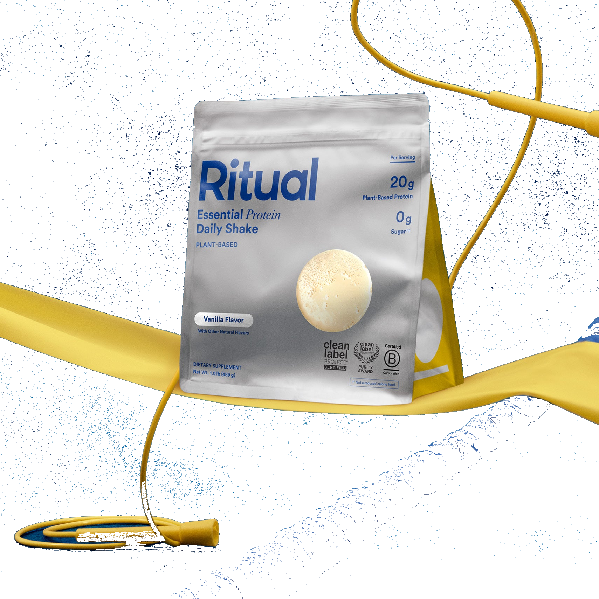

Product imagery supplied by the retailer. Packaging may vary — verify the Supplement Facts panel on the container you receive.
Ritual
Essential Protein Daily Shake
Our analysis — editorial take, not from the label
A fully disclosed plant-based pea protein shake with 20 g of protein per 31 g scoop and added choline plus L-methionine; its third-party testing covers heavy metals and microbes rather than an NSF Certified for Sport or Informed Sport banned-substance mark.
- Protein
- 20 g
- Per scoop
- 65%
- Source
- pea protein
- Servings
- 15
Price tier: Premium · relative cost per full serving across this database
We don't list dollar prices — they change daily and go stale. Check the live price instead:
View current price Compare all protein powdersScoop Sense doesn't collect user reviews and won't invent them. Read customer reviews on Amazon
Affiliate links — Scoop Sense may earn a commission at no additional cost to you.
Sold in a single Vanilla flavor, sweetened with monk fruit extract and Reb-M steviol glycoside rather than sugar or artificial sweeteners.
Label verified: July 2026 · View label source
Label data
Per full serving · 15 servings per container · from the manufacturer's panel
| Protein per serving | 20 g |
|---|---|
| Serving size | 31 g |
| Protein per scoop | 65% |
| Source | pea protein |
| Sweetener | monk fruit + Reb-M steviol glycoside |
| Organic Pea Protein | 20 g protein (31 g scoop) |
| Choline (as VitaCholine choline bitartrate) | 150 mg |
| L-Methionine | 400 mg |
| Proprietary blend | No |
Primary label source: Ritual — official product page (Supplement Facts panel dialog) · verified July 2026
Cautions
- Made from peas; not appropriate for a legume/pea allergy
- Naturally sweetened with monk fruit extract and a small amount of Reb-M steviol glycoside
- Intended to supplement the diet, not replace whole-food protein sources
Product details
Where this label sits
Ritual Essential Protein Daily Shake is one of the protein powders in the Scoop Sense database. Every active ingredient on the panel is listed with its own dose — nothing is hidden inside a blend total. It runs 15 servings per container at the full labeled serving. Everything on this page comes from the manufacturer's supplement facts panel as of July 2026 — never from the marketing page.
Key ingredients & studied doses
- Organic Pea Protein · 20 g protein (31 g scoop). Plant-based complete protein studied for supporting muscle protein synthesis in a manner comparable to dairy protein sources.
- Choline (as VitaCholine choline bitartrate) · 150 mg. Essential nutrient involved in normal cell-membrane structure and cognitive function.
- L-Methionine · 400 mg. Essential amino acid added to round out the plant protein's amino acid profile.
Flavors & sweetener
Sold in a single Vanilla flavor, sweetened with monk fruit extract and Reb-M steviol glycoside rather than sugar or artificial sweeteners.
Who it's best for
A standard-ratio powder — fine as a food supplement when total daily protein is what matters. Suits anyone avoiding dairy. Derived from the label figures above — not medical advice.
How we log this label
Every entry is built the same way: we read the current supplement facts panel, log each disclosed dose, compare it against the amounts used in published research, flag proprietary blends, and state the cautions plainly. The full methodology explains each step.
This label against the research
How we evaluate labelsEach bar shows the amount commonly used in published human research, and where this label's dose falls against it. Research amounts are context, not a recommendation — they are not doses, and nothing here is medical advice.
-
Protein20 g
At or above the studied amount0studied range 20 g–40 g50 g
Per-meal doses studied for muscle protein synthesis run about 20–40 g of high-quality protein, with the upper half of that range favoured for larger athletes and older adults.
What other people say
Why we don't rate productsTwo different things, side by side: the rating the seller publishes on its own store, and what independent users write in public threads. Scoop Sense writes neither and collects no reviews of its own. Neither is evidence that a product works — they describe what people experienced and expected, not what the research shows.
On the seller's page
4.6 / 5
50 ratings
The brand's own storefront, read July 2026. A seller's rating is collected and moderated by the seller — treat it as a marketing figure, not an independent one.
What people actually report
Community mentions of Ritual's Daily Shake are sparse and mostly come from pregnancy and general-fitness threads rather than bodybuilding subs, with users flagging the single strong vanilla flavor, occasional headaches, and a sense that it costs more per gram of protein than whey options, though its third-party testing counts in its favor.
- negative Flavor variety. The shake only comes in vanilla, and one user found the flavor overpoweringly strong and hard to mask.
- negative Reported side effect. One user reported getting headaches after starting the shake and asked whether others experienced the same.
- mixed Texture and value. A user comparing options noted the texture takes some getting used to and that it costs more relative to its protein-per-serving than whey powders.
- positive Third-party testing. The same comparison still lists it as a serious contender specifically because it is third-party tested and free of random fillers.
Read the threads yourself
-
“This vanilla flavor is soo strong and I ask struggling to find ways to mask the flavor a bit.”
r/pregnant thread, 2025 -
“I've tried Rituals protein powder but I started getting headaches which was so strange! Anyone else have that happen?”
r/pregnant thread, 2026 -
“pea-based, third-party tested, made for women w/o random fillers. 20g protein per ~120 cal. more expensive tho and have read smthn abt the texture that takes getting used to.”
r/stopdrinkingfitness thread, 2026
Common questions about Ritual Essential Protein Daily Shake
How much of a Ritual Essential Protein Daily Shake scoop is actually protein?
20 g of protein from a 31 g serving — about 65%. The rest is flavoring, fats, carbs, and whatever else the label lists. A higher percentage means less filler per scoop.
Does Ritual Essential Protein Daily Shake disclose every dose?
Yes — the label lists an individual amount for each ingredient, with no proprietary blends. That is what the "label fully disclosed" tag on Scoop Sense means, and it is what lets each dose be compared against the amounts used in published research.